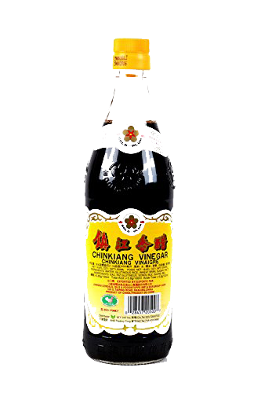
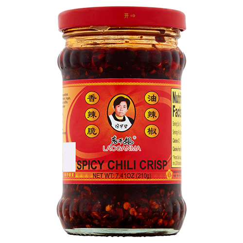

cucumber salad
A salad!
- cucumber
- chinkiang vinegar
- soy

- garlic
- laoganma (optional) 
- cut the cucumber into chunks (or if one of the smaller cucumbers, smash with the flat of the knife instead). put the things on the cucumber, leave to sit for 10min before serving
- instead of shenxiang, soy and laoganma, you can also make a really simple one with salt and garlic.
- this also works really nicely with big chewy noodles, served cold -- though cut the cucumber into thin, flat strips instead of chunks.